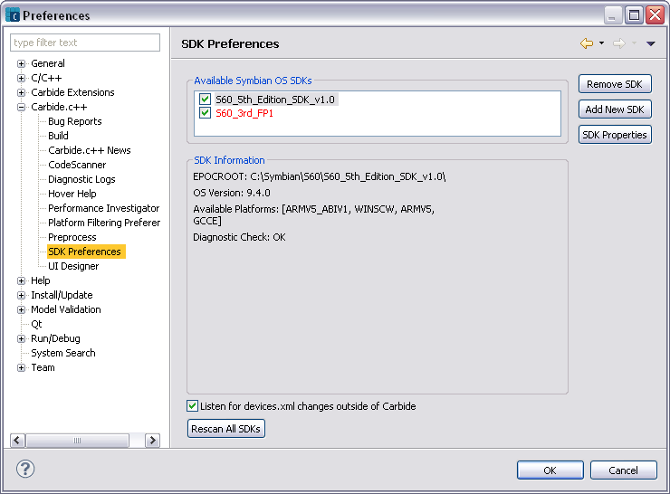

The Symbian OS plug-ins can usually detect when a SDK has been installed, as described in SDK Support.
To do this:
Click Window > Preferences to open the Preferences window, then select SDK Preferences in the Carbide.c++ group to show the page for SDKs.

Click Add New SDK to add a specific SDK or Rescan All SDKs to search the installed SDKs and add them to the Available Symbian OS SDKs list.
Click OK to save the settings.